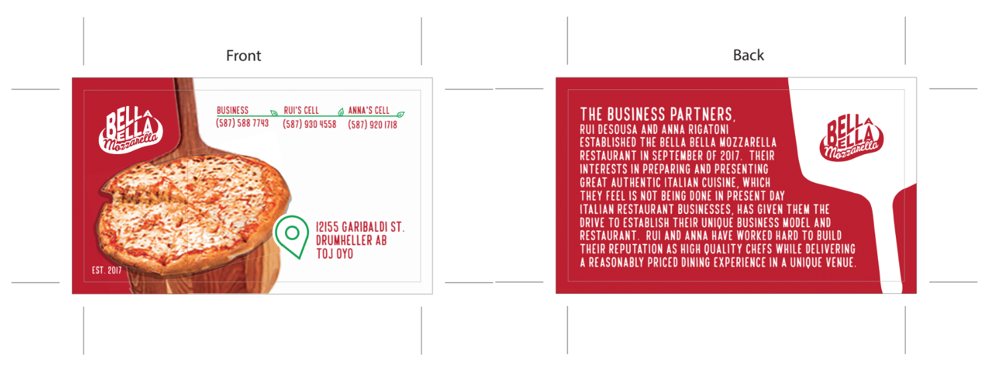
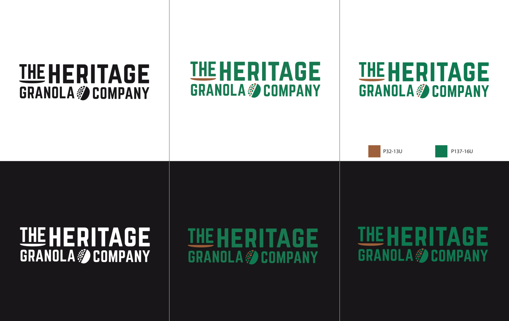
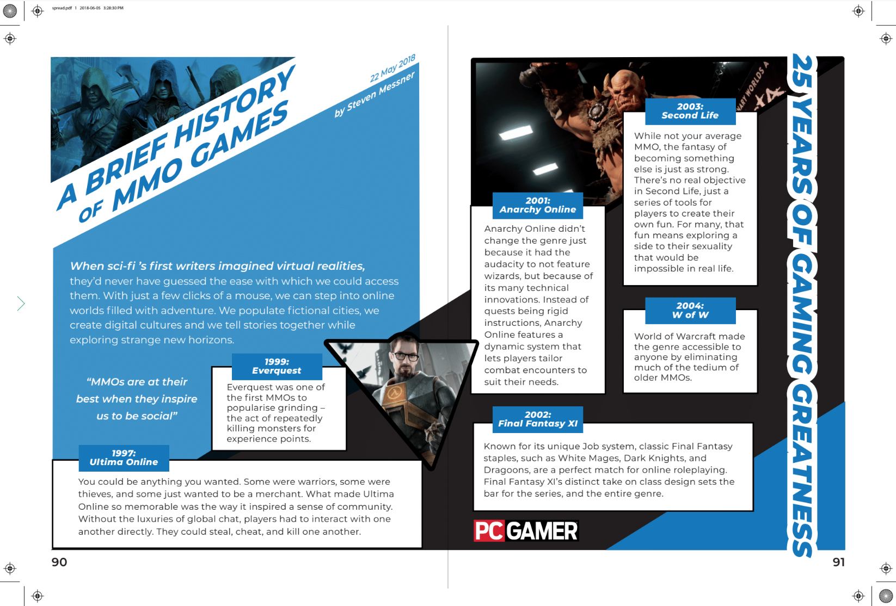
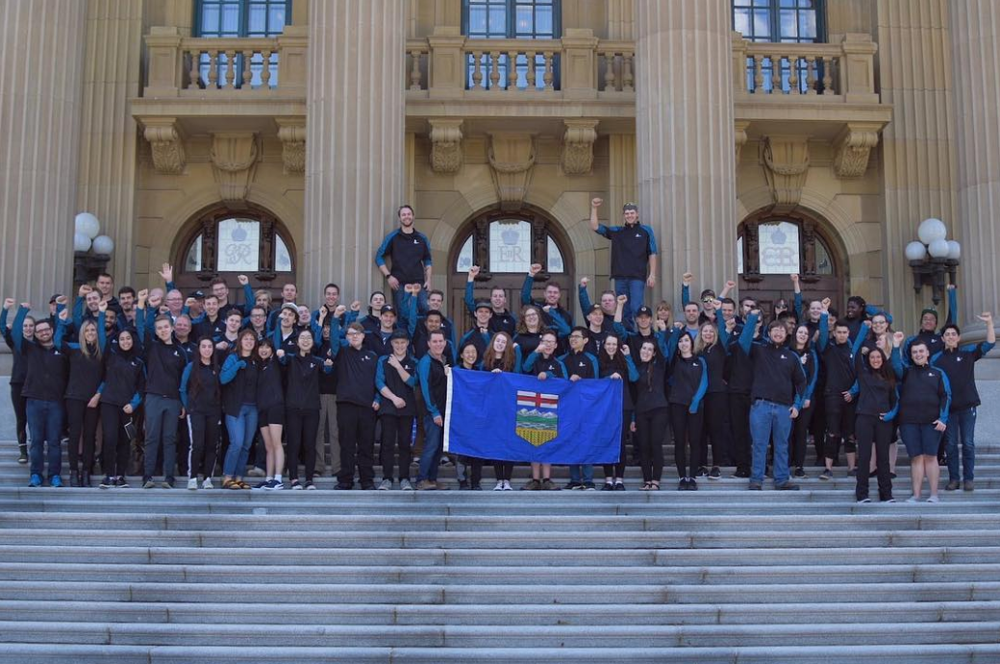

Competing among top high school design students
Skills competitions are held worldwide from regional, provincial (or state!), national, to international levels. Skilled professionals in all trades (from welding, baking, to 3D game art) compete and are judged by industry professionals.
Throughout high school, I competed in the Graphic Design category. In 2016, I competed at the regional level. In 2017, I passed the regional competition and competed at the provincial level, coming in 5th place. Finally in 2018, I achieved 1st place in provincial competition and advanced to national competition to compete against other provincial champions from across Canada, where I also recieved 1st place.
I did not expect to go far at all, especially since my school did not offer any type of Graphic Design courses. I was completely self-taught and had to convince my school to let me participate. It was such an amazing learning journey and I'm incredibly thankful to Mr. Q for supporting me all 3 years.
Designing for industry – on a time crunch
At each level of competition, we were assigned a project brief and expected to produce logos, business cards, posters, packaging, etc. We were judged on design quality (typography, layout, appropriateness to target demographic) and pre-press production (color format, image scaling, bleeds).
In provincial competition, I had 10 hours across 2 days to compete a set of branding for 1 fictional client. National competition ramped it up to 12 hours/2 days for 2 separate branding projects. I've never designed so fast in my life!
How well can you design with adrenaline?
I like to spend time on brainstorming before I design, but time was limited. Aross the competition, we were also given surprise 30 minute design challenges. As a result, I created both some of my strongest and weakest work in this competition.
Provincial: 1 logo, 1 business card, 1 business-card-holder, 1 poster
Brief: Create branding for an Italian pizza restaurant appealing to families with children. They would like to convey friendliness and fun.
We were given a paragrah of text to inlude in the design. I could have formatted the text to make it more readable.

This business-card holder is supposed to look like a mini-oven when assembled.

National Day 1: 1 logo, 1 app icon, 1 app launch screen, 1 product packaging
Brief: An all-natural granola company targeted towards both men and women ages 20 - 30 of upper-middle-class income who enjoy active, outdoor lifestyles.
This logo is more complex than I would have liked. It could do without the underline shape on the 'The'.

The idea was to play on the shape of an oat (and granola having a mix of multiple nuts & fruits!), but it's hard to see since that part of the design is too complex and small.

This was for a high-energy health tracking & goal-setting app. I kept playing with the idea of a granola mix, this time adding a "check-list" icon to communicate what the app was. I'm pleased with how it turned out!

I reused motifs from the logo and app icon to communicate the idea of "a lively mix!" Left myself just under an hour to create this, and I do not feel like this design had a unifying concept.
National Day 2: 1 magazine cover, 1 magazine spread, 1 pamphlet
Brief: Consumers of PC Gamer Magazine, who are predominately males aged 18 - 35.

I wanted to create a dynamic and exciting design. We were also required to manipulate & include at least 3 images. I'm really proud of how this turned out. I did spend a disproportionate amount of time on this though.

Creating a spread to showcase a timeline. Again, trying to be dynamic – but more simplicity would have been better (to make the time progression organization more clear). I think this is one of my weaker designs.
30 minute time crunch! Since I used a lot of angled lines in my previous designs, I included angular shapes here again in an attempt to unify this pamphlet with the rest of the designs. The design included a link, which should have been made more distinct because it is like a "call-to-action".
Final thoughts
I had so much fun doing Skills Canada and met some amazing student designers (like the 2nd place winner, who is incredibly talented in a way I can only dream to be). I'm humbled to win 1st place, but it by no means reflects my quality as a designer – besides, it didn't test the most important part: working with clients! I have much to learn and many areas to improve.
Congratulations Team Alberta!